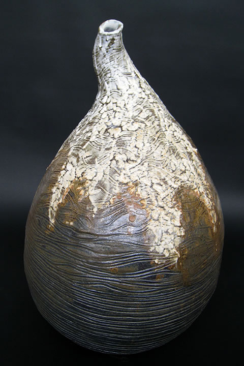
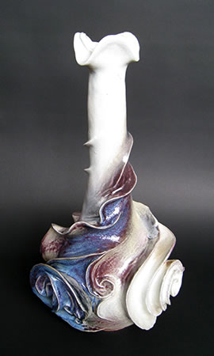
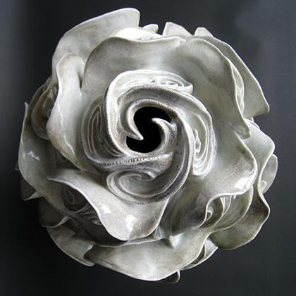

|  |
| 【岩の雫（しずく）】 |
この大地から湧きたつ豊饒（ほうじょう）なる精気のひとしずく。
それが化身したような陶作品が、法曽の窯から生まれました。
猪風来の縄文造形と、復活した法曽焼の技法。
ふたつの融合は、これまで見たことのないような新たな造形美を出現させました。
この新たな作品群を猪風来は「縄文法曽陶（じょうもん ほうそとう）」と名付けた。
「縄文法曽陶」は地元法曽の山土粘土と磁器土を使用し、１２５０度を超す高温で焼成される。
陶土による釉薬陶作品は重厚な土味に垂れかかる白や緑の釉薬が力強く、大地のぬくもりが凝固したような様相。
磁器土の作品はうってかわって対照的に、滑らかな白い地肌に優美な縄文スパイラル文様が浮き出し、釉薬の
青や紫が華やかであり、且つ「わび・さび」にも通ずる深みを感じさせる逸品に仕上がりました。
これら作品は猪風来が新見市法曽の地から生み出し世界に発信する、猪風来流スパイラルアート芸術における
新境地の萌芽となるものです。
一連の作品約３０点を展示。どうぞご覧下さい。
|  |  |
| 【花の雫（しずく）１】 | 【花の雫（しずく）２】 |